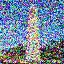

1.1 Forward Process
As discussed earlier, diffusion models are trained to remove noise from an image. An important part of diffusion is adding noise. The forward process
can be described by:
\(
\begin{equation}
x_t = \sqrt{\bar{\alpha_t}}x_0 + \sqrt{1 - \bar{\alpha_t}}\epsilon
\end{equation}
\)
Where \( \epsilon \sim N(0, 1) \), and \( \bar{\alpha}_t \) are hyperparameters that control the variance and mean over time.
In this project, we use DeepFloyd's hyperparams.
Below, a visual example of the forward noise is shown.

A 64x64 image of the Berkeley Campanile.
250 steps of noise.

500 steps of noise.
750 steps of noise.